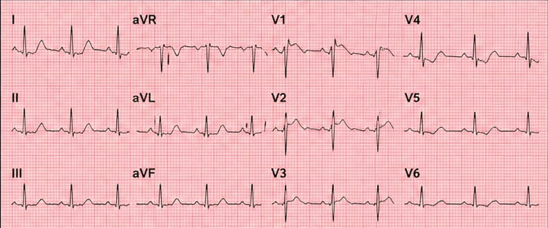

Análisis de Trazado Eléctrico
Paciente masculino de 62 años. Monitorización previa al colapso súbito.
ECG_MONITOR_v2.0

¿Cómo sería su interpretación?
Analice las derivaciones DI, DIII y el complejo anteroseptal para determinar el diagnóstico anatomo-patológico.